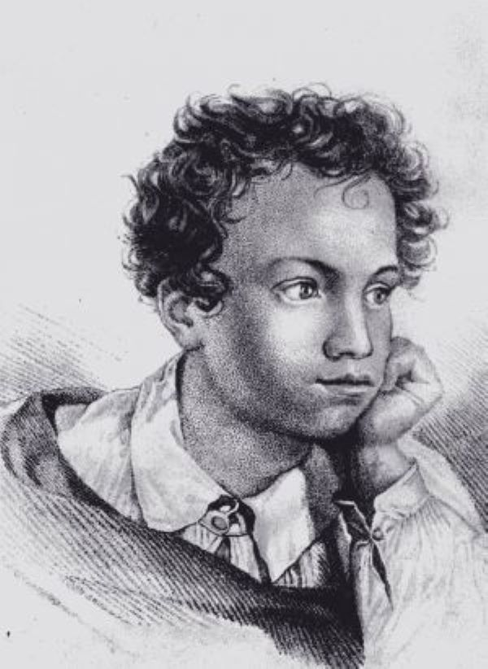
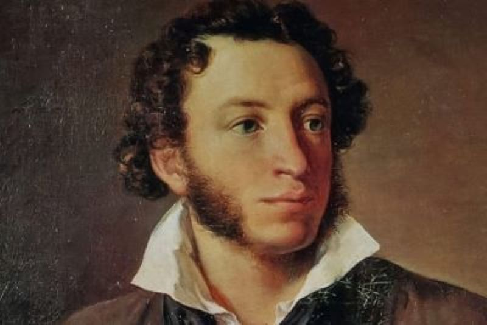
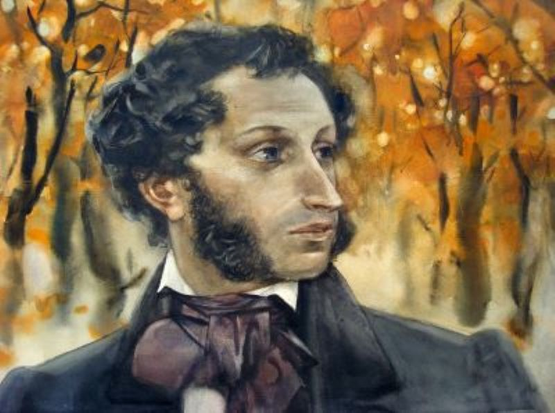

Александр Сергеевич Пушкин (1799-1837 гг.) – великий русский поэт, прозаик, драматург. Автор бессмертных произведений в стихах и прозе: романов “Евгений Онегин”, “Дубровский”, известных поэм “Руслан и Людмила”, “Кавказский пленник”, повести “Пиковая дама” и многих других,а также сказок для детей.
Александр Сергеевич Пушкин родился 6 июня (по старому стилю 26 мая) 1799 года в Москве в семье нетитулованного дворянского рода. Прадедом поэта по матери был африканец Абрам Петрович Ганнибал, являвшийся воспитанником и слугой царяПетра Первого.
В 1811 году Пушкин учился в Царскосельском Лицее. В биографии Пушкина важно выделить, что впервые его стихи появляются в печати в 1814 году, в журнале «Вестник Европы», где публикуется его стихотворение «К другу-стихотворцу». В этот же период поэта принимают в литературное общество «Арзамас».Вольтер и Эварист Парни были любимыми авторами юного Пушкина. На дальнейшее творчество молодого Пушкина огромное влияние оказали труды таких классиков русской литературы, как Батюшков, Жуковский, Фонвизин и Радищев. Пушкин оканчивает лицей в 1817 году и выпускается в чине коллежского секретаря 12-го класса, после чего его определяют в Коллегию иностранных дел.
В 1819 году Пушкина принимают членом литературно-театрального сообщества «Зелёная лампа». В этот же период он активно работает над поэмой «Руслан и Людмила» (1820). В 1821 году Пушкин пишет поэму «Кавказский пленник», которая делает его одним из величайших литераторов среди современников. Через год начинается работа над «Евгением Онегиным»(1823-1832). В 1832 году поэт задумывает создать исторический роман о временах пугачевщины, для чего изучает все доступные материалы (многие из них засекречены на то время), объезжает многие места, где проходило восстание. После всех этих путешествий осенью 1833 года пишет «Историю Пугачёва» и «Песни западных славян», а также поэмы «Анджело» и «Медный всадник», начинает работу над повестью «Пиковая дама». В это же время Пушкин начинает работу над романом «Дубровский», в котором главному герою приходится стать разбойником.
Важно отметить такой момент в биографии Пушкина: после повышения в чин камер-юнкера, Александр Пушкин принимает решение покинуть службу и подает в отставку. Положение поэта выглядит и вовсе бедственно, поскольку многие произведения Пушкина не допускаются к печати из-за цензуры (например, поэма «Медный всадник»). В 1834 году Пушкин дописывает повесть «Пиковая дама», которую немедленно отсылает в журнал «Библиотека для чтения». За повесть он получает высокий гонорар, но решить финансовые вопросы так и не удается. В 1836 году Александр Сергеевич Пушкин решает издавать журнал «Современник». Однако популярностью у публики журнал не пользуется. В четвёртом томе этого журнала был впервые напечатан исторический роман «Капитанская дочка». В 1837 году между Александром Сергеевичем Пушкиным и Жоржем Дантесом возник конфликт. Пушкин вызывает Дантеса на дуэль, и в результате получает смертельное ранение в живот. Император Николай I, зная о тяжелом состоянии поэта, обещает обеспечить достатком семью и выплатить все долги. Впоследствии монарх выполнил все обещания. Умер поэт 29 января (10 февраля) 1837 года.
